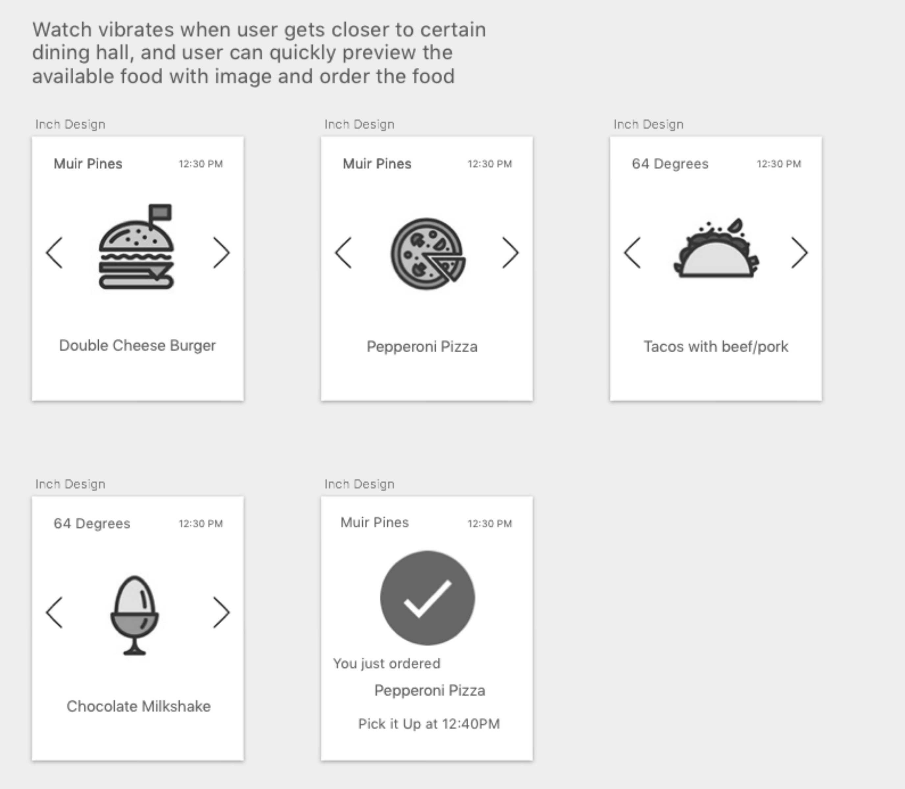
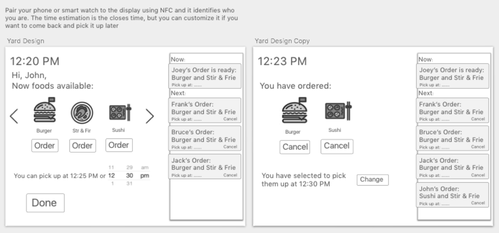

Persona and task: Jack is a second year UCSD student in the Marshall college and he needs a way to help him decide the dining hall he should go and the food he should order, so that he can get the food by the time he steps into the dining hall
Video:
PDF:


